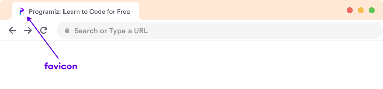

WELCOME TO HTML TUTORIAL
HTML Favicons - Adding a Site Icon to Your Web Pages
A favicon (short for "favorite icon") is a small icon associated with a website that appears in browser tabs, bookmarks, and other areas where your site is referenced. Adding a favicon to your website enhances brand recognition and provides a professional touch to your web pages.
What is a Favicon?
A favicon is a small, iconic image that represents your website. It appears in several places:
- Browser tabs
- Bookmarks/Favorites list
- Browser history
- Mobile home screen when added
- Search engine results (sometimes)
Adding a Basic Favicon
To add a favicon to your website, use the link element in the head section:
<head>
<title>My Website</title>
<link rel="icon" href="favicon.ico" type="image/x-icon">
</head>The favicon file should be placed in the root directory of your website for automatic detection by some browsers.
Favicon File Formats
Common file formats for favicons include:
- .ico - Traditional favicon format (supports multiple sizes)
- .png - Standard image format with transparency
- .svg - Scalable vector format for modern browsers
- .jpg - Less common but supported
Modern websites often use multiple formats and sizes for different devices.
Favicon Examples
Complete Favicon Implementation
For comprehensive favicon support across all platforms, you'll need multiple icon sizes and formats:
<!-- Basic favicon -->
<link rel="icon" href="favicon.ico" sizes="any">
<!-- iOS and Android icons -->
<link rel="apple-touch-icon" href="apple-touch-icon.png">
<link rel="icon" type="image/png" sizes="192x192" href="android-chrome-192x192.png">
<!-- Windows Tiles -->
<meta name="msapplication-TileImage" content="mstile-144x144.png">
<meta name="msapplication-TileColor" content="#ffffff">
<!-- SVG favicon for modern browsers -->
<link rel="icon" href="favicon.svg" type="image/svg+xml">Creating Favicons
You can create a favicon using various methods:
- Design icons using graphic software like Adobe Illustrator, Photoshop, or GIMP
- Use online favicon generators that create all necessary sizes and formats
- Convert existing logos to appropriate favicon formats
- Create a simple text-based favicon with an online generator
Favicon Size Recommendations
| Purpose | Size | Format |
|---|---|---|
| Basic Favicon | 16x16 pixels | .ico or .png |
| Modern Browsers | 32x32 pixels | .png |
| iOS Home Screen | 180x180 pixels | .png |
| Android Chrome | 192x192 pixels | .png |
| Windows Tiles | 270x270 pixels | .png |
| Safari Pinned Tab | Any size (vector) | .svg |
Implementation Examples
| Approach | HTML Code | Notes |
|---|---|---|
| Minimal | <link rel="icon" href="favicon.ico"> | Basic implementation, limited support |
| Standard | <link rel="icon" type="image/png" sizes="32x32" href="favicon-32x32.png"> | Better clarity with size specification |
| Apple Touch | <link rel="apple-touch-icon" href="apple-touch-icon.png"> | For iOS devices when added to home screen |
| SVG Vector | <link rel="icon" href="favicon.svg" type="image/svg+xml"> | Scalable icon for modern browsers |
| Site Manifest | <link rel="manifest" href="site.webmanifest"> | Web app manifest for PWA support |
Best Practices for Favicons
- Keep your favicon design simple and recognizable at small sizes
- Provide multiple sizes for better display across different devices
- Use transparent backgrounds for modern favicon formats (.png, .svg)
- Include both .ico and .png versions for maximum compatibility
- Test your favicon across different browsers and devices
- Consider using color that contrasts well with browser UI themes
- Make your favicon consistent with your brand identity
- Use online generators to create a complete favicon package